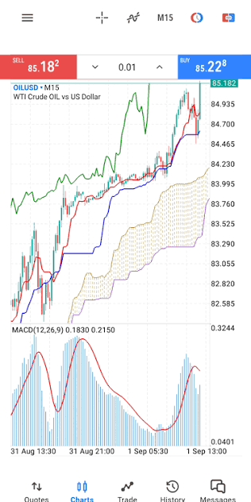
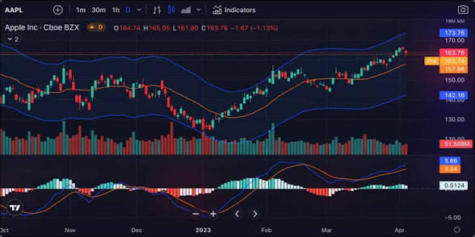

Understanding Currency Pairs
It is very important to understand how currencies are quoted against each other. For example, in USD/JPY, USD is the base currency while JPY is the quote currency.
USD/JPY = 153.19
1 USD = 153.19 JPY
The base currency is the first currency in a currency pair. It is the currency whose value is being expressed.
The quote currency is the second currency in the pair. It tells us how much of the quote currency is required to buy one unit of the base currency.
For the example:
USD/JPY = 153.19
This means that 1 US dollar is worth 153.19 Japanese yen.
USD/JPY = 153.19
↓
USD/JPY = 154.00
One U.S. dollar is now worth more Japanese yen, meaning the USD has strengthened relative to the JPY, assuming the quotation is interpreted normally.
USD/JPY = 153.19
↓
USD/JPY = 150.00
One U.S. dollar is now worth fewer Japanese yen, meaning the USD has weakened relative to the JPY.
When a trader buys USD/JPY, they are effectively buying the base currency (USD) while selling the quote currency (JPY).
When they sell USD/JPY, they are selling the base currency (USD) while buying the quote currency (JPY).
Major, Minor, and Exotic Currency Pairs
Currency pairs are commonly divided into three broad categories:
1. Major Pairs
Major currency pairs generally involve the U.S. dollar and are among the most actively traded forex pairs.
Examples:
- EUR/USD
- USD/JPY
- GBP/USD
- USD/CHF
2. Minor Pairs
Minor currency pairs do not contain the U.S. dollar but can still have significant trading activity and liquidity.
Examples:
- EUR/GBP
- EUR/NZD
- AUD/CAD
3. Exotic Pairs
Exotic currency pairs generally combine a major currency with the currency of an emerging or smaller economy.
Examples:
- USD/KES
- EUR/KES
Exotic pairs can have lower liquidity and wider spreads than many major pairs, which can make trading costs and price movements different from those of major pairs.
| Type | Example | General Characteristics |
|---|---|---|
| Major | EUR/USD | High liquidity and generally tighter spreads |
| Minor | EUR/GBP | No USD, but can still be actively traded |
| Exotic | USD/KES | Generally lower liquidity and potentially wider spreads |
How Can You Make Money From Forex Trading?
There are two main ways to make money from forex trading. The first one is going long and the second one is going short.
Going long means buying a currency pair with the expectation that its price will rise.
A merchant may buy a product for $10 and later sell it for $15, making a $5 difference. A long forex trade follows a similar basic idea: buy at a lower price and attempt to sell at a higher price.
Going short means selling a currency pair with the expectation that its price will fall.
In a long trade, the trader benefits if the price rises while in a short trade, the trader benefits if the price falls.
Actual trading involves spreads, commissions where applicable, slippage, and other costs.
How Do You Know Whether Price Will Rise or Fall?
A beginner can start by understanding two broad approaches: fundamental analysis and technical analysis.
Fundamental analysis attempts to understand why a currency may strengthen or weaken.
- Interest rates
- Inflation
- Employment data
- Economic growth
- Central-bank decisions
- Political developments
- Geopolitical events
- Economic reports
Strong U.S. economic data → potentially stronger USD
Higher expected U.S. interest rates → potentially greater demand for USD
These are examples, not guaranteed outcomes.
Technical analysis focuses primarily on price charts and market behaviour.
- Price trends
- Support and resistance
- Candlestick patterns
- Moving averages
- RSI
- MACD
- Bollinger Bands
Technical analysis can help traders identify possible areas for entries, exits, and risk management.
Technical analysis does not predict the future with certainty.
Fundamental vs. Technical Analysis
| Fundamental Analysis | Technical Analysis |
|---|---|
| Focuses on economic factors | Focuses on price behaviour |
| Helps explain WHY | Can help identify WHEN/WHERE |
| Uses economic data and news | Uses charts and indicators |
| Interest rates, inflation, jobs, etc. | Support, resistance, RSI, MACD, etc. |
Fundamental analysis asks: “Why might price move?”
Technical analysis asks: “Where and when might I enter or exit?”
Many traders combine both approaches.
How to Start Trading Forex as a Beginner
Step 1 — Learn the Fundamentals
Understand:
- Currency pairs
- Base and quote currencies
- Pips
- Lots
- Spreads
- Leverage
- Margin
- Stop-loss orders
- Take-profit orders
- Risk management
Step 2 — Choose a Forex Broker
A forex broker provides the platform and infrastructure through which retail traders can access forex markets.
JustMarkets is an optional broker used in this learning pathway.
Create JustMarkets AccountThis is a referral/affiliate link where applicable.
Opening and Practising With a Demo Account
Practise on a demo account while you learn before moving to a live account. A demo account allows you to become familiar with the platform and practise executing trades without risking real money.
Demo trading does not completely reproduce the psychological pressure of trading real money.
MetaTrader 5

MetaTrader 5 (MT5) is a trading platform commonly used by traders to monitor markets and execute trades through supported brokers.
- Opening and closing trades
- Viewing prices
- Setting stop-loss orders
- Setting take-profit orders
- Managing positions
- Viewing account balance and margin
- Monitoring open trades
TradingView
TradingView is primarily used for charting and market analysis.
- Candlestick charts
- Multiple timeframes
- Drawing tools
- Support and resistance
- Trendlines
- Indicators
- Alerts
- Market analysis
TradingView → Analyse
MT5 → Execute and manage trades

A Simple Beginner Forex Workflow
1. Learn
Understand the market and the instrument.
2. Analyse
Use fundamental and/or technical analysis.
3. Plan
Determine your entry, stop-loss, and potential target before entering.
4. Check Risk
Determine how much you are willing to risk.
5. Execute
Place the trade through your trading platform.
6. Manage
Follow your trading plan rather than making emotional decisions.
7. Review
Record the trade and identify what worked and what did not.
Risk Warning
Leverage can magnify both profits and losses. A trader can lose money quickly. Beginners should not risk money they cannot afford to lose. A stop-loss can help limit losses but cannot guarantee a specific execution price during all market conditions. Position size should be considered before entering a trade. Past performance does not guarantee future results.
Before Your First Forex Trade
- I understand what a currency pair is.
- I understand base and quote currencies.
- I understand what buying and selling a pair means.
- I understand pips and spreads.
- I understand the basic risks of leverage.
- I have practised on a demo account.
- I understand how to place and close a trade.
- I know where to place my stop-loss.
- I have a basic trading plan.
- I understand that losses are possible.
Conclusion
Forex trading involves buying and selling currencies in an attempt to benefit from changes in exchange rates. Understanding currency pairs, base and quote currencies, long and short trades, fundamental and technical analysis, trading platforms, and risk management provides a foundation for learning how the forex market works.
The goal for a beginner should not be to rush into making money. Learn the fundamentals, practise on a demo account, develop a trading plan, understand risk, and build your knowledge progressively.